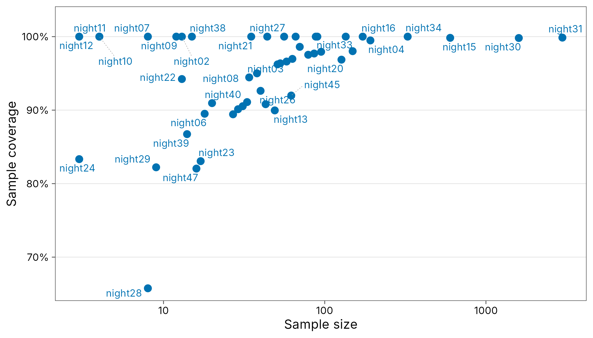
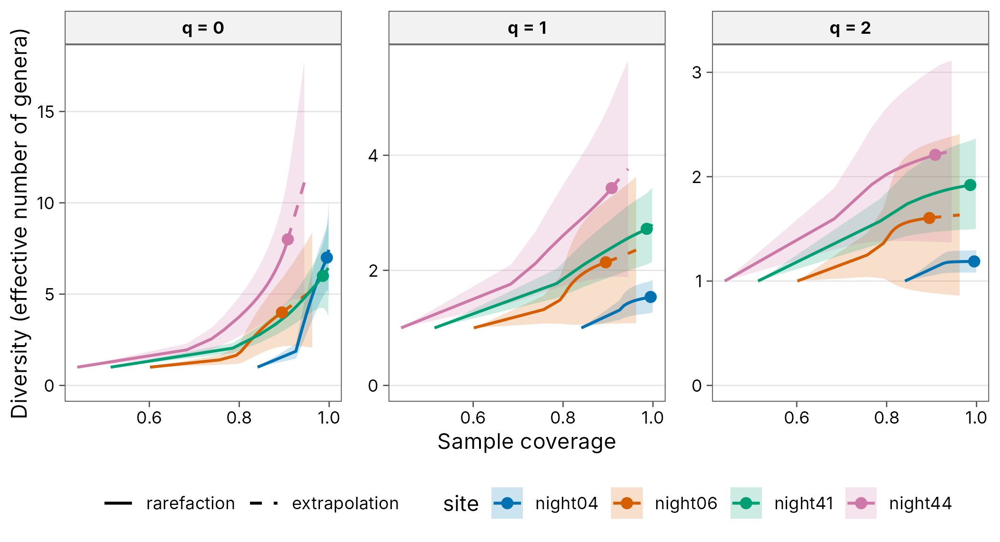
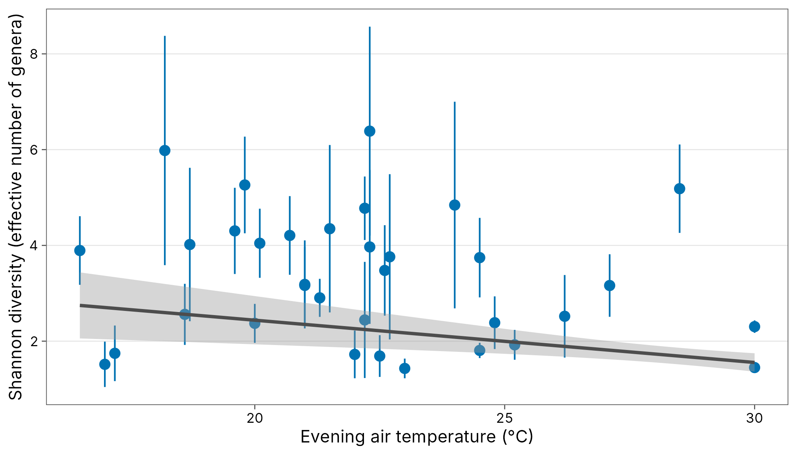
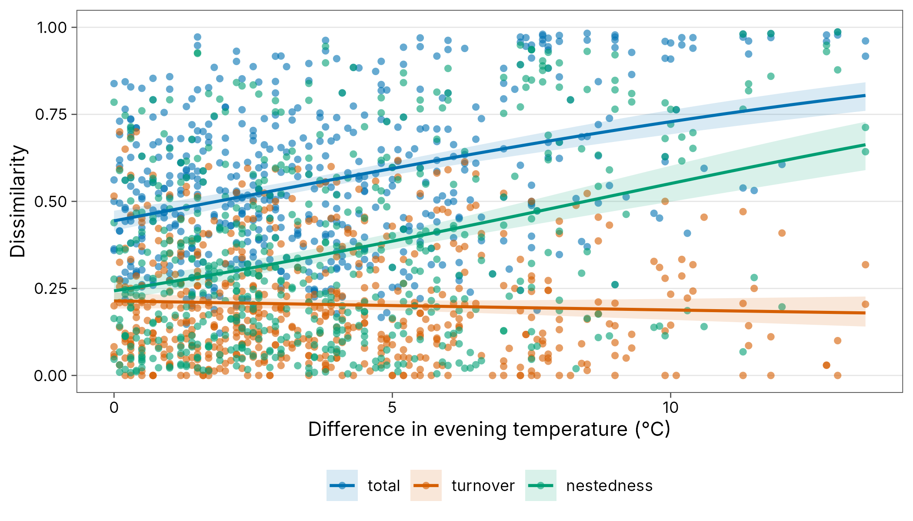

Case study: caddisflies at a light trap
Source:vignettes/articles/case-insects.Rmd
case-insects.RmdThis case study runs the full workflow on nightly light-trap catches
of adult caddisflies (Trichoptera) from the Rhône, France. The data are
the trichometeo dataset in the ade4
package: counts of 17 genera on 49 nights, with weather recorded on each
night. Sampling effort differs greatly between nights, which makes it a
good example of why diversity has to be standardised before it is
compared.
Source and licence. Usseglio-Polatera, P. and Auda, Y. (1987). Influence des facteurs météorologiques sur les résultats de piégeage lumineux. Annales de Limnologie 23: 65-79. Distributed with ade4 (Dray and Dufour 2007; licence GPL-2 or later). The data are loaded from ade4 at run time and are not redistributed with tidydiversity.
Tidy the data
community_long() turns a site by species table into the
long format used throughout the package. Covariate columns that are not
selected stay with each record, and add_site_data() joins
them back on later.
data(trichometeo, package = "ade4")
nights <- tibble::tibble(
site = sprintf("night%02d", seq_len(nrow(trichometeo$fau))),
evening_temp = trichometeo$meteo$T.soir,
wind = trichometeo$meteo$Vent,
humidity = trichometeo$meteo$Humidite,
cloud = trichometeo$meteo$Nebu.Nuit
)
wide <- bind_cols(site = nights$site, trichometeo$fau)
moths <- community_long(wide, cols = -site)
moths
#> # A community: 49 sites, 17 species, 7,778 individuals
#> site species abundance
#> <chr> <chr> <dbl>
#> 1 night01 All 1
#> 2 night01 Ced 2
#> 3 night01 Hfo 1
#> 4 night01 Hsp 2
#> 5 night01 Hym 5
#> 6 night01 Psy 17
#> 7 night01 Sta 1
#> 8 night02 All 2
#> 9 night02 Hym 3
#> 10 night02 Psy 8
#> # i 305 more rowsHow complete is each night?
cov <- div_coverage(moths)
summary(cov$n)
#> Min. 1st Qu. Median Mean 3rd Qu. Max.
#> 3.0 16.0 43.0 158.7 86.0 2980.0
autoplot(cov) + scale_x_log10()
#> Scale for x is already present.
#> Adding another scale for x, which will replace the existing scale.
#> Warning: ggrepel: 18 unlabeled data points (too many overlaps). Consider
#> increasing max.overlaps
Catches range from a handful of insects to more than a thousand, so raw counts of genera mostly track trap effort. Sample coverage is high on most nights, so coverage-based standardisation is reliable here.
Rarefaction and extrapolation
A few contrasting nights show the shape of the curves. Plotting against sample coverage rather than the number of insects puts nights of very different size on a common scale. Solid lines are interpolated, dashed lines extrapolated, and ribbons are 95% bootstrap intervals.
pick <- cov |>
arrange(n) |>
slice(c(15, 25, 35, 45)) |>
pull(site)
curves <- div_rarefy(filter(moths, site %in% pick), nboot = 100)
autoplot(curves,
x = "coverage", ncol = 3,
ylab = "Diversity (effective number of genera)"
)
Standardised diversity for every night
Nights with too few insects to estimate anything are dropped first.
keep <- cov |>
filter(n >= 20, s_obs >= 2) |>
pull(site)
std <- div_standardise(filter(moths, site %in% keep),
q = c(0, 1, 2),
nboot = 100
)
distinct(std, coverage)
#> # A tibble: 34 x 1
#> coverage
#> <dbl>
#> 1 0.945
#> 2 0.945
#> 3 0.945
#> 4 0.945
#> 5 0.945
#> 6 0.945
#> 7 0.945
#> 8 0.945
#> 9 0.945
#> 10 0.945
#> # i 24 more rows
std
#> # A tibble: 102 x 9
#> site q m method coverage diversity se lower upper
#> <chr> <dbl> <dbl> <chr> <dbl> <dbl> <dbl> <dbl> <dbl>
#> 1 night01 0 41.5 extrapolation 0.945 7.96 1.57 4.87 11.0
#> 2 night01 1 41.5 extrapolation 0.945 4.02 0.817 2.42 5.62
#> 3 night01 2 41.5 extrapolation 0.945 2.63 0.555 1.54 3.72
#> 4 night03 0 25.5 rarefaction 0.945 3.33 0.457 2.44 4.23
#> 5 night03 1 25.5 rarefaction 0.945 1.72 0.254 1.23 2.22
#> 6 night03 2 25.5 rarefaction 0.945 1.38 0.178 1.03 1.73
#> 7 night04 0 36.5 rarefaction 0.945 3.52 0.412 2.71 4.33
#> 8 night04 1 36.5 rarefaction 0.945 1.43 0.105 1.23 1.64
#> 9 night04 2 36.5 rarefaction 0.945 1.18 0.0469 1.09 1.28
#> 10 night05 0 40.3 rarefaction 0.945 4.49 0.681 3.16 5.83
#> # i 92 more rowsDiversity and weather
tidy() gives model-ready columns, including an
inverse-variance weight, and add_site_data() brings the
weather covariates in.
shannon <- std |>
tidy() |>
filter(q == 1) |>
add_site_data(nights)
fit <- lm(estimate ~ evening_temp + wind + humidity,
data = shannon,
weights = weight
)
broom::tidy(fit, conf.int = TRUE)
#> # A tibble: 4 x 7
#> term estimate std.error statistic p.value conf.low conf.high
#> <chr> <dbl> <dbl> <dbl> <dbl> <dbl> <dbl>
#> 1 (Intercept) 5.87 3.34 1.76 0.0894 -0.959 12.7
#> 2 evening_temp -0.116 0.0773 -1.50 0.144 -0.274 0.0418
#> 3 wind -0.0540 0.0600 -0.901 0.375 -0.177 0.0685
#> 4 humidity -0.0140 0.0241 -0.580 0.566 -0.0631 0.0352
ggplot(shannon, aes(evening_temp, estimate)) +
geom_pointrange(aes(ymin = conf.low, ymax = conf.high),
colour = plot_palette(1)
) +
geom_smooth(
method = "lm", formula = y ~ x,
mapping = aes(weight = weight), colour = "grey30"
) +
labs(
x = "Evening air temperature (\u00b0C)",
y = "Shannon diversity (effective number of genera)"
) +
theme_tidydiversity()
Beta diversity between nights
Abundance-based Bray-Curtis dissimilarity, split into balanced variation (turnover) and abundance gradients (nestedness), against the difference in evening temperature.
decay <- moths |>
filter(site %in% keep) |>
left_join(nights, by = "site") |>
beta_decay(gradient = evening_temp, index = "bray")
autoplot(decay, xlab = "Difference in evening temperature (\u00b0C)")
Reporting
div_table(filter(std, site %in% keep[1:6]),
digits = 1, wide = TRUE,
output = "kable", caption = "Coverage-standardised diversity, first six nights"
)| site | q = 0 | q = 1 | q = 2 |
|---|---|---|---|
| night01 | 8.0 [4.9, 11.0] | 4.0 [2.4, 5.6] | 2.6 [1.5, 3.7] |
| night03 | 3.3 [2.4, 4.2] | 1.7 [1.2, 2.2] | 1.4 [1.0, 1.7] |
| night04 | 3.5 [2.7, 4.3] | 1.4 [1.2, 1.6] | 1.2 [1.1, 1.3] |
| night05 | 4.5 [3.2, 5.8] | 1.7 [1.3, 2.1] | 1.3 [1.1, 1.5] |
| night08 | 4.0 [2.7, 5.3] | 1.7 [1.2, 2.3] | 1.4 [1.0, 1.7] |
| night13 | 10.8 [5.6, 15.9] | 2.4 [1.2, 3.7] | 1.5 [1.0, 2.0] |